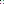

xwMOOC 고생대 프로젝트
컴퓨터가 보는 이미지
1. 단색 이미지 파일
단색으로 저장된 이미지 파일을 불러와서 컴퓨터가 인식하는 형태, 즉 0과 1로 보게 되면 다음과 같다. \(4 \times 4\) 행렬로 1은 점이 없고, 0은 점이 있는 것으로 저장된다.
[[0 1 1 1]
[1 1 1 1]
[1 1 1 1]
[1 1 1 0]]이미지를 불러오는데 PIL을 사용하고, 행렬변환 및 출력처리를 위해 numpy를 사용한다.
from PIL import Image
import numpy as np
imgSinglePng = Image.open('../fig/bw-single-dot.png')
imgSinglePngArr = np.asarray(imgSinglePng)
print imgSinglePngArr1.1. 단색 .png 파일 생성방법
먼저 윈도우즈 그림판을 최대한 확대하고 도구 → 연필을 선택한다. 그리고 색상을 선택하고 점을 찍는다. 위 사례는 \(4 \times 4\) 그림판에 점을 첫번째 행과 첫번째 열에 찍고, 마지막 4번째 열과 4번째 행에 찍은 결과다.
점을 두개 찍은 후에 이미지 파일을 저장하는데 파일 형식 은 단색 비트맵(.bmp)으로 저장한다. 그리고 나서 .png로 저장한다. .png 파일은 인터넷에서 .bmp 대신 표준으로 사용되는 파일이다.
2. 256 색상 파일
윈도우즈 그림판에서 256 생상(BGR) 체계를 적용하면 다음과 같다. 검정색은 0, 흰색은 255, 113은 녹색에 가깝고, 210은 청색, 79는 붉은색에 가깝게 표현된다.
[[ 0 255 255 113]
[255 255 255 255]
[255 255 255 255]
[ 79 255 255 210]]위 코드와 동일하고 256색상을 갖는 .bmp 파일만 입력값으로 넣어준다.
img256Bmp = Image.open('../fig/color-256-dot.bmp')
img256BmpArr = np.asarray(img256Bmp)
print img256BmpArr
3. 256 색상 파일
상기 .bmp 파일을 .png 파일로 저장할 경우 BGR 체계에 더해서 알파값이 더 추가된다. 즉, 검은색은 0, 0, 0 이 되고 추가로 알파가 추가되어 부드러움으로 더 표현할 수 있다. BGR은 각각 0 ~ 255 가지 색상을 갖게 되어 총 표현할 수 있는 색상 수는 \(256 \times 256 \times 256\)이 된다. 그리고 마지막 알파도 0 ~ 255 값을 갖게 되고, 가장 투평한 것이 0, 불투명한 최대 값이 255를 갖는다.
가장 상단 행렬이 첫번째 행을 나타내고, 그 다음 행렬이 그 다음 행렬을 나타낸다.
[[[ 0 0 0 255]
[255 255 255 255]
[255 255 255 255]
[ 32 192 64 255]]
[[255 255 255 255]
[255 255 255 255]
[255 255 255 255]
[255 255 255 255]]
[[255 255 255 255]
[255 255 255 255]
[255 255 255 255]
[255 255 255 255]]
[[224 32 64 255]
[255 255 255 255]
[255 255 255 255]
[ 64 64 192 255]]]위 코드와 동일하고 256색상을 갖는 .png 파일만 입력값으로 넣어준다.
img256Png = Image.open('../fig/color-256-dot.png')
img256PngArr = np.asarray(img256Png)
print img256PngArr